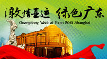

第16届亚运会将于2010年11月12日至27日在中国广州进行，广州是中国第二个取得亚运会主办权的城市。北京曾于1990年举办第11届亚运会。广州亚运会将设42项比赛项目，是亚运会历史上比赛项目最多的一届。
亚洲运动会的比赛项目不像奥林匹克运动会那样有严格的规定，除田径、游泳、足球、篮球等广为 第四届亚洲运动会开展的项目每届都必须列入外，主办国可根据自身的条件和运动技术水平适当增减。如第三届亚洲运动会在日本举行，日本增加了自己的强项乒乓球、排球、网球等；第四届在印度尼西亚举办时，印度尼西亚增加了该国擅长的羽毛球；第十届南朝鲜列入了跆拳道；第十一届我国则取消了跆拳道，增加了武术等项目。当然，比赛项目的增减与变换都必须得到亚奥理事会的同意和批准，东道国无权随意安排。亚洲运动会迄今已举行了15届，比赛项目也经历了从少到多的发展过程--从第一届的6项逐渐增至第13届的36项。前13届运动会举办过的项目分别有射箭、田径、羽毛球、棒球、篮球、台球、保龄球、拳击、皮划艇、自行车、马术、击剑、足球、高尔夫球、体操（含艺术体操、蹦床）、手球、曲棍球、柔道、卡巴迪、空手道、现代五项、赛艇、橄榄球、藤球、射击、软式网球、垒球、壁球、游泳（含花样游泳、跳水和水球）、乒乓球、跆拳道、网球、排球（含沙滩排球）、举重、摔跤、武术、帆船、铁人三项。 |
亚洲运动会(Asian Games)简称亚运会，是亚洲地区规模最大的综合性运动会，每四年举办一届，与奥林匹克运动会相间举行。最初由亚洲运动会联合会主办，1982年后由亚洲奥林匹克理事会(Olympic Council of Asia)主办。
 |